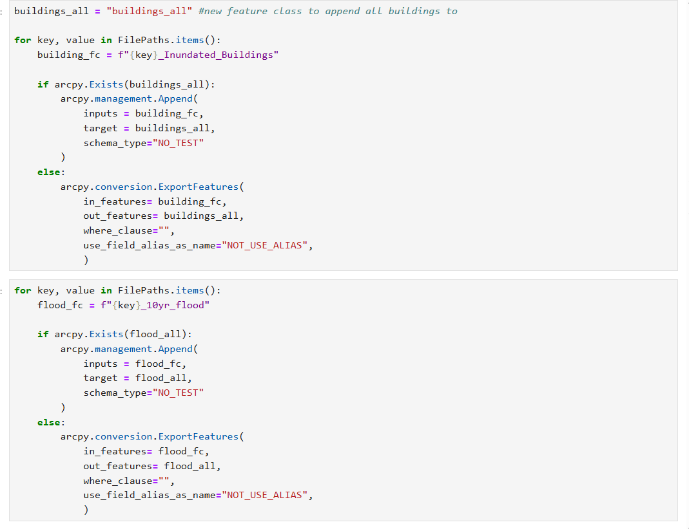
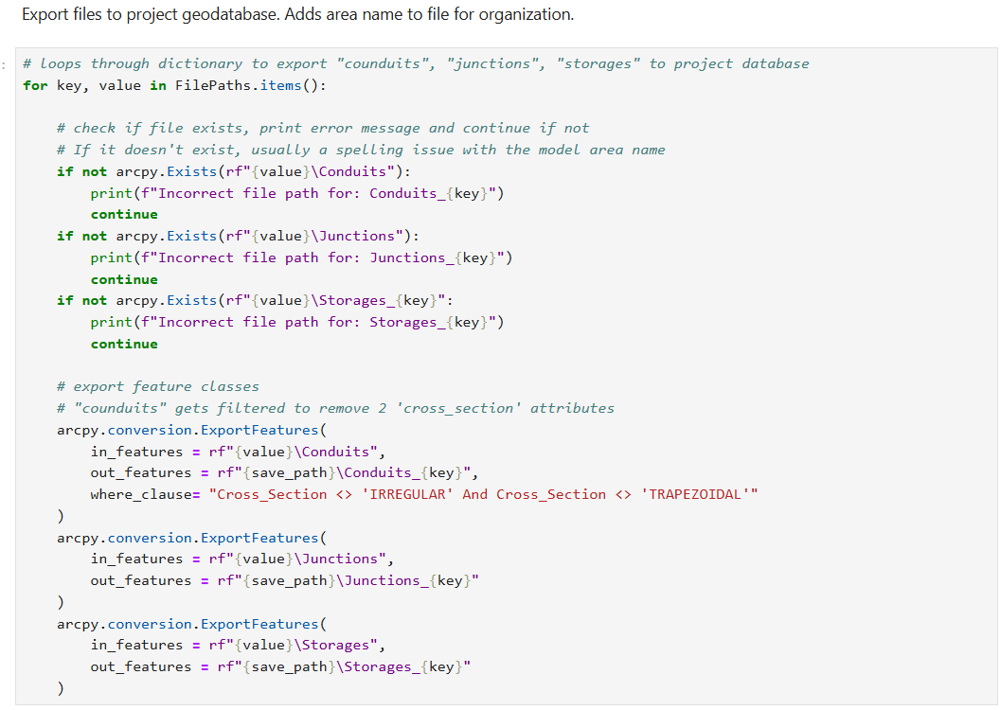

Hydraulic/Hydrologic Model Risk Assessment
Background
This was a project I completed while interning with the City of Minneapolis Public Works. I wrote two ArcPy scripts that automate the process of compiling hydraulic/hydrologic model outputs, then conduct geoprocessing and analysis to return flood risk scores for assets in the stormwater network.
The final risk scores are used to help inform the city's decisions about where to prioritize inspection and repair work.
I developed the scripts as Jupyter Notebooks designed to run inside ArcGIS Pro. My focus was on simplicity and readability so the scripts can be easily maintained.
Methods
Building Flood Risk
The first script evaluates the flood risk of buildings within pipesheds. The workflow:
- Reads datasource file paths from a CSV and stores them in a dictionary.
- Iterates through the dictionary to import selected feature classes from each datasource into a geodatabase.
- Appends the imported data into a single dataset for analysis.
- Performs geoprocessing and spatial analysis to rank flooding by pipeshed.
- Assigns risk scores to individual assets based on the pipeshed results.

Pipe Capacity Risk
The second script evaluates pipe capacity deficiencies across different flood events. The workflow:
- Reads datasource file paths from a CSV and stores them in a dictionary.
- Iterates through the dictionary to import selected feature classes from each datasource into a geodatabase.
- Appends the imported data into a single dataset for analysis.
- Processes multiple model output fields through a scoring algorithm.
- Returns a final risk score for each stormwater asset.
